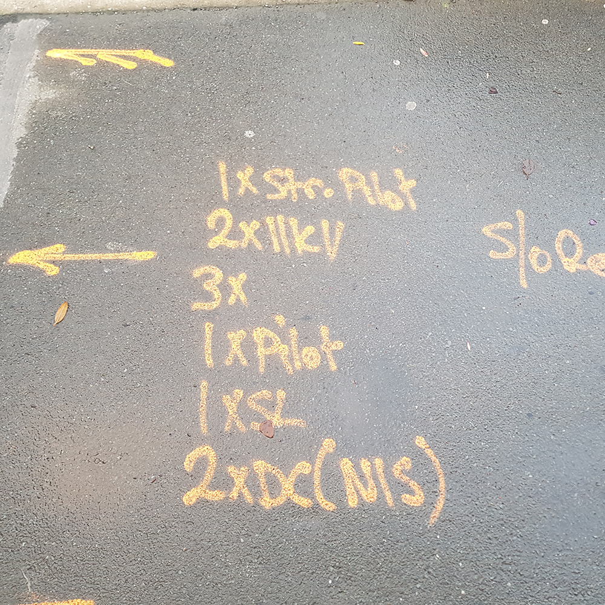
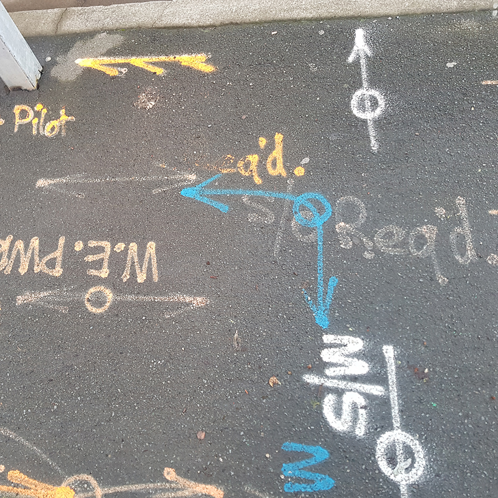

The internet contains a plethora of information, data and knowledge. However at the very heart of the internet, what makes up it's essence, is culture. And what is a better summary of internet culture than memes?
When first approaching this project I was going to try and develop my work from project three, and meld it into something fitting for this project. It wouldn't have been overally related to the internet or it's culture.
However I decided instead to take this oppurtunity to bring to life something which truly represented the internet.
I came up with three initial ideas - a physical calendar or wall planner which had a different meme for every month of the year, a puzzle of memes, and a flip book which played out a popular vine as you flipped through it.
Since this project requires we design for an audience, I decided not to do a calendar. A wall planner would have more interaction but I still felt like it wasn't really audience based.
A flipbook would be incredibly interactive, relying completely on an audience/user for it to function, except I didn't want to distill the essence of the internet down to just one, max two vines.
So I decided to develop a jigsaw puzzle with memes as the picture. A jigsaw puzzle is interactive, and can be used by an individual or a group of people socially, just as the internet can be.
My concept for this project was a Meme Jigsaw Puzzle. I wanted to select memes from the internet which were considered classic and would be recognised by nearly everyone. I wanted to put the last couple of years of internet culture into my puzzle.
On the tops of many of the buildings around us in the city are antennae of all different types. They are used primarily to receive television broadcasts in homes and workplaces.